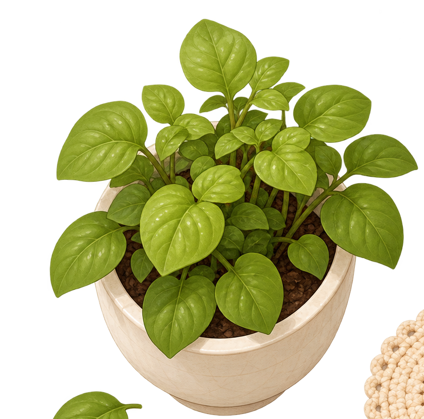
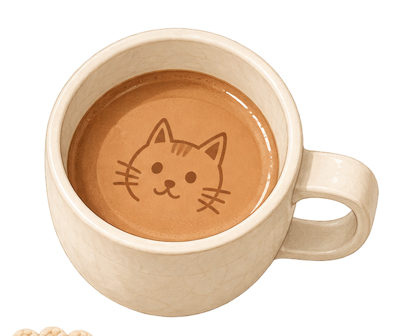
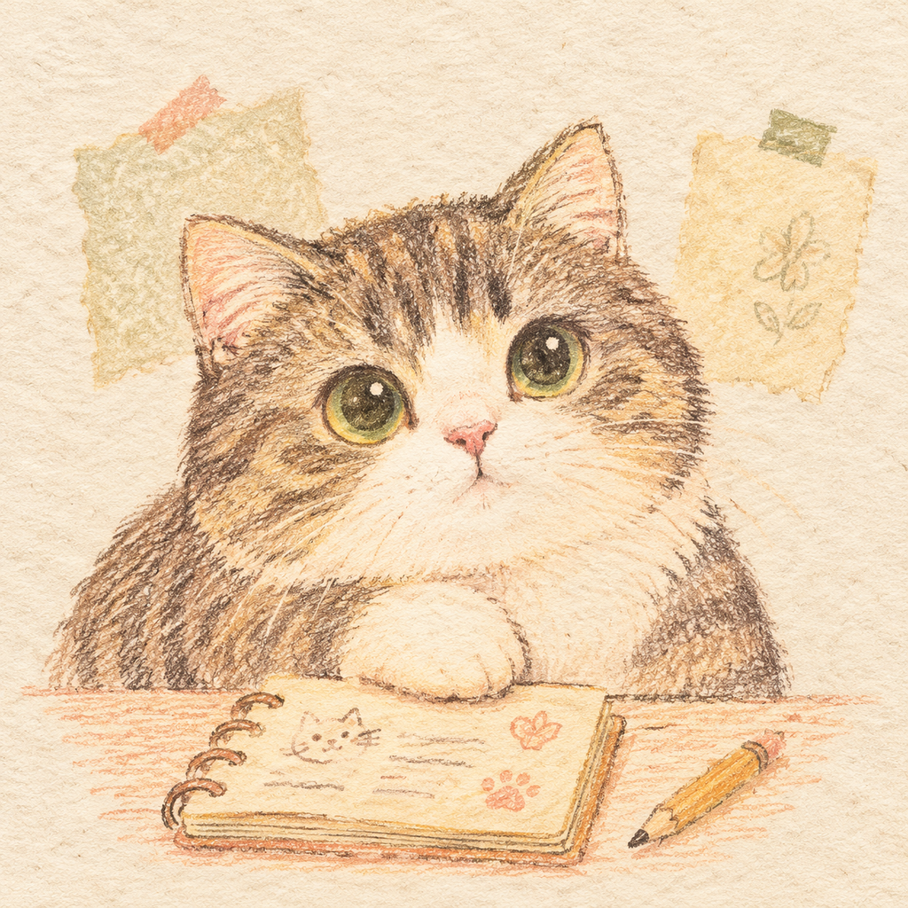

猫在


猫在
难受的时候，先坐一会儿。
猫帮你理一理。
猫会问几道很短的问题，陪你停一下、看事实，再邀请你试一个做得到的小动作。
话留在桌上
安全判断在当前浏览器完成；继续后，本轮回答和主动填写的文字会用于联网生成问题地图，历史记录不会自动发送。

猫的第一问
慢慢选就好
现在状态
需要时使用示例：
这让我想起你上次留给小猫的一件事，好像有一点相似。要一起看看吗？
双脚感受地面的支撑。慢慢呼气，然后依次看见身边三个物体。
随时可以跳过
只用于这次整理，不解释成症状；除非你之后选择“留给小猫”，否则不会保存。
猫
猫还缺三条信息
先做这一个小实验
它只改一个动作。情绪没有马上缓解、结果推翻原猜测，或暂时还不知道，都不是失败。
第一次填？先看一个完整例子
选中下面的实验，四栏会自动填好；你只需要改掉不符合自己的部分。
- 预测
- 如果我不马上追问，对方会更疏远，我的不安会一直上升。
- 第一步
- 回复变慢时，先记下预测，再把第二次确认延迟 15 分钟。
- 观察
- 观察 15 分钟，记录有没有新事实和自己实际做了什么。
- 停止
- 现实风险升高或明显无法承受时停止；做不到时缩小动作。
这件事由你决定。可以停止。做完能多得到一条事实。
猫在这里等你。
做完以后，只告诉猫实际发生了什么。
把动作放进一个具体时刻
这一步现在可能还太大，或者不适合。
先把担心和实际发生分开。
原来担心的是
这次先到这里。
- 原来的判断
- 实际发生
- 我现在怎么看
- 还不知道
- 猫的总结
这次先到这里。下次遇到相似的事，猫还在。
查看记录或调整本轮实验
What the observations changed
Original judgment: asking would make the relationship end. Actual observation: you sent a clear invitation, and the reply was only “Saturday works.” You completed the controllable step by starting the conversation. Where the relationship will go remains unknown.
Missing a check-in or an experiment is information, not failure.
问题地图
展开当前过程
逐项查看与核对
联网生成的问题地图
稍等，猫在整理刚才说到的事
基础安全判断已完成；本轮结构化回答正在用于生成可修改的地图。
可以修改的暂时猜想
由你确认
完整问题地图
猫的暂时理解
阿德勒视角
这目前只是猫的猜想。要是你觉得和自己的经历有一点像，我们可以一起想一个小实验，看看现实会不会带来新的线索。
可能相关的心理概念
猫这样排，对吗？
不用迁就猫。只有你确认过的部分，才值得带进一次现实核对。
只衡量这次整理是否带来清晰度，不代表情绪改善。
还想问猫一个问题？联网可选
再问猫一个小问题
当前结果仍保留
问题可以很短。这里只会额外发送当前问题地图和你主动提交的这句话，长期记录不会自动发送。
猫要认真说明：这里提供的是自我反思，不是心理治疗、医学诊断或危机干预。如果你有自伤、轻生或正在遭受暴力的风险，请立即联系身边可信任的人、当地急救服务或危机热线。